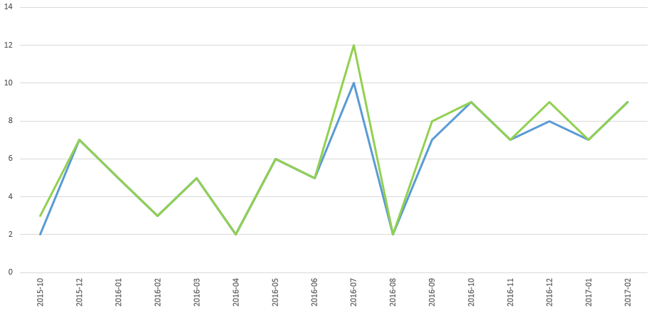
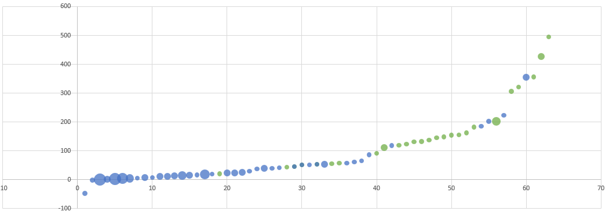

Analisi dei contenuti con gold su r/italy
Scritto il da Timendum
Come chiesto da LaTalpa123, ecco una personale analisi dei contenuti di /r/italy che hanno ricevuto il gold.
Perimetro
L’analisi include 99 post, dal 18/09/2015 a oggi (ieri in realtà l’ultimo registrato).
Grafici
Gold su tempo

Blu = conteggio contenuti con gold
Verde = somma dei valore
Ho eliminato ultimo e primo mese, in quanto potenzialmente incompleti.
Commento personale: ad agosto tutti in ferie
Gold per voto

Blu = submission
Verde = commenti
NOTA: ho dovuto eliminare questo perchè troppo fuori scala (2177 contro <500 del secondo)
Tabelle dei notabili
Quanto gold
Per tipo:
| Tipologia | quantità totale | numero volte | media |
|---|---|---|---|
| Commento | 31 | 27 | 1,148148148 |
| Link | 73 | 72 | 1,013888889 |
Quindi i commenti pagano poco di più ma capita molto meno spesso (meno della metà)
Chi ha ricevuto più Gold
| utente | quantità totale | numero di volte |
|---|---|---|
| /u/LaTalpa123 | 5 | 5 |
| /u/ElSelby | 4 | 3 |
| /u/BoxMulder | 3 | 1 |
| /u/LanciaStratos93 | 3 | 3 |
| /u/vehement_nihilist | 3 | 3 |
| /u/kastardenna18 | 2 | 1 |
| /u/Micolash90 | 2 | 1 |
| /u/badgirlgoneworse | 2 | 2 |
| /u/giganterossa | 2 | 2 |
| /u/macedogna | 2 | 2 |
| /u/matart91 | 2 | 2 |
| /u/sempiternum | 2 | 2 |
| /u/ZugNachPankow | 2 | 2 |
Casi estremi
Il punteggio peggiore, tra tutti i gold è di Signor_Rana.
L’unico altro negativo è di LanciaStratos93, ma solo -1.
(non ci sono stati gold a submission non positive [il minimo dei post è 0]).
Il migliore è del periodo panettone/pandoro.
Il miglior link successivo si assesta a 355
Il contenuto con più gold è di suspance di BoxMulder
Tecnicismi
Ho usato PRAW per estrarre i gold di italy.
Excel per elaborare i dati.
Trovate i dati dell’estrazione su sharecsv.